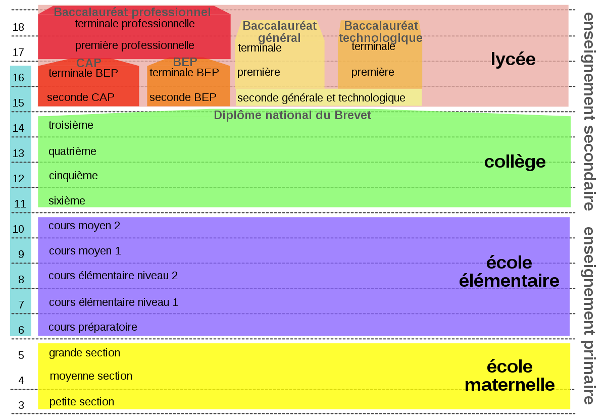
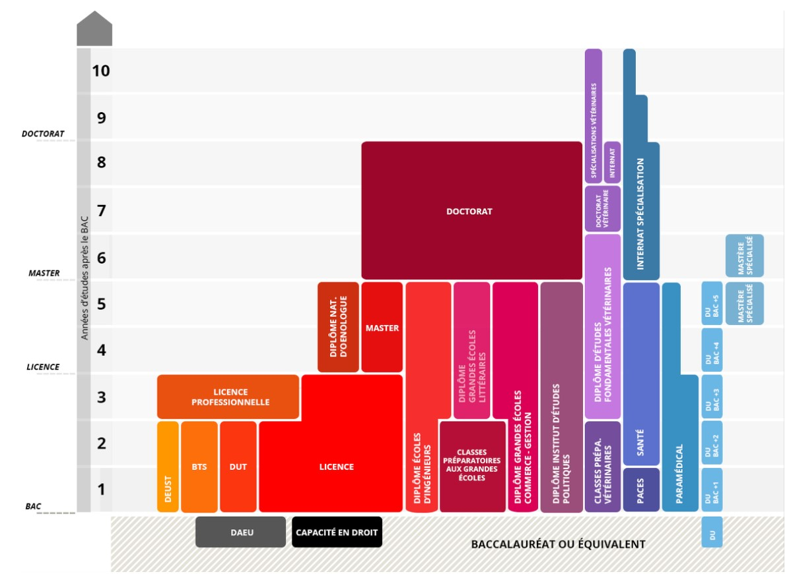

La Vie en France


L'éducation en France
Dans cette partie, nous vous expliquerons le système d'éducation en France brievement. Comme illustré ci-dessous, l'éducation formelle en France commence à l'âge de 3 et l'éducation secondaire finit à l'âge de 18 avec le baccalaureat.
De la côté d'éducation tertiaire, il existe plusieurs choix ou formation après le BAC. Voici quelques possibilités :
